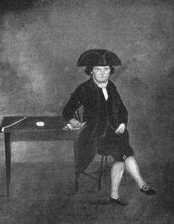

John Ja. Lansing
John Ja. Lansing was born in December 1715. He was the son of Jacob and Lena Glen Lansing. Fortunately, he mostly was known as "Johannes Jacobse Lansing." He grew up an older son in the large family of a prominent Pearl Street silversmith and businessman.
This individual appears to have married three times. In August 1741, he wed Rachel Lieverse (LIevens) at the Albany Dutch church. That marriage may not have produced any children before she died the following May. In October 1744, he married Catharina Van Schaick. A year later, their son, Goosen, was christened in Albany and died a few weeks afterwards. Second wife Catharina died in August 1745. In December 1747, he married Schenectady native Catharina Schuyler. From 1748 to 1759, their marriage produced at least five children. Johannes's third marriage would last for fifty years. He was a lifelong member and supporter of the Dutch church .
Like too many others, this John Lansing lived in eighteenth century Albany. This individual set up his home on the west side of Market Street - four doors north of Maiden Lane. In 1736 and again in 1740, he was appointed constable for the third ward. In 1758 and 1751, he was appointed third ward firemaster. In 1752, he was elected assistant alderman for the third ward.
John Ja. Lansing was a merchant who took part in a number of community-based initiatives to protect Albany's interest in the fur trade. In 1763, he was one of two "John J. Lansings" named on a list of Albany freeholders. Beginning during the 1760s - and over three decades, he was re-imbursed for services from the city treasury.
In 1756, his name may have been included on a census of Albany householders made by the British army. Beginning during the 1760s and continuing into the next century, his third ward residence, additional properties, and personal holdings were valued on city assessment rolls. He owned a number of lots in the second ward (Barrack and Lion Streets). Earlier, he was involved in petitions for lands beyond Albany.
In January 1764, he was identified as "Esq." when he was commissioned a captain in the Albany battalion of the provincial militia.
Almost sixty years old at the outbreak of hostilities in 1775, he would not be expected to have played an active part in the fighting. However, this Albany mainliner did contribute financially, take part in community-based activities, and also performed services for the Albany committee.
His recently widowed daughter lived with him for a time during the 1780s. However, by 1790, Lena had re-married, her family was gone to Schenectady, and her aging parents' household was configured on the census.
Catherine Schuyler Lansing died in March 1797 at the age of seventy-three. In 1800, his household consisted only of a couple of young adults, himself, and three slaves. John Ja. Lansing died in April 1808. He was remembered by the Schuyler family historian who also mentioned the existence of a portrait of him. This extremely long-lived Albanian had lived for more than ninety-two years.
Poor quality image of John J. Lansing copied from an online reproduction and printed with the inscription: "From an original portrait, taken in his ninetieth year, and now in possession of children of his great graudnon, the late Marcena M. Dickinson, of Nyack, N. Y." Artist and current owner presently unknown.